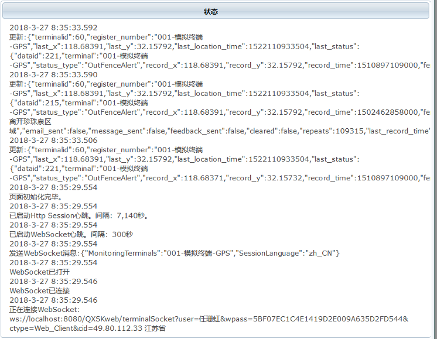

WebSocket是近年来才实现标准化的数据交换模式。以往需要追踪数据变化的应用场景，只能采用客户端轮询或者专门的即时通讯平台，而WebSocket非常简洁地满足了服务器与客户端的双向通讯
一个javascript应用WebSocket的例子
以下是一段javascript代码：网页打开时连接一个WebSocket服务，然后利用回调函数接收处理数据。
var currentWebsocket;
var websocketURL = "ws://www.qxsk9.com/QXSKweb/terminalSocket?user=x&wpass=y ";
function connectWebSocket() {
currentWebsocket = new WebSocket(websocketURL);
currentWebsocket.onmessage = onMessageFromWebSocket;
currentWebsocket.onopen = function () {
currentWebsocket.send(“Hello”); // 向服务器发送反馈或者参数
};
currentWebsocket.onclose = function () {
};
currentWebsocket.onerror = function () {
};
}
function onMessageFromWebSocket(evt) {
var data = parse(evt.data + "");
// 处理接收到数据
}
function disconnectWebSocket() {
if (currentWebsocket)
currentWebsocket.close();
}
window.addEventListener("load", connectWebSocket(), false);
这个例子显示了应用WebSocket的主要框架：
实际运行的代码还需要加入心跳（目前多数服务器或者浏览器并没有实现ping/pong机制）和异常处理。
以下是一个JSF应用WebSocket的截图：
一个Android应用WebSocket的例子
以下是一段Android代码：构建OkHttpClient、然后定义WebSocketListener 监听器来处理事件。
import okhttp3.OkHttpClient;
import okhttp3.Request;
import okhttp3.Response;
import okhttp3.WebSocket;
import okhttp3.WebSocketListener;
import okio.ByteString;
public void open() {
Request request = new Request.Builder().url(socketPath).build();
OkHttpClient webSocketClient = new OkHttpClient.Builder()
.retryOnConnectionFailure(true)
.connectTimeout(8, TimeUnit.SECONDS)
.readTimeout(5, TimeUnit.SECONDS)
.writeTimeout(5, TimeUnit.SECONDS)
.build();
webSocketClient.newWebSocket(request, new AppWebSocketListener());
webSocketClient.dispatcher().executorService().shutdown();
}
private final class AppWebSocketListener extends WebSocketListener {
@Override
public void onOpen(WebSocket webSocket, Response response) {
webSocket.send(“Hello”); // 向服务器发送反馈或者参数
}
@Override
public void onMessage(WebSocket webSocket, String text) {
// 处理接收到的字串数据text
}
@Override
public void onMessage(WebSocket webSocket, ByteString bytes) {
// 处理接收到的字节流数据bytes
}
@Override
public void onClosing(WebSocket webSocket, int code, String reason) {
Log.d("WebSocket", "onClosing: " + code + "/" + reason);
}
@Override
public void onClosed(WebSocket webSocket, int code, String reason) {
Log.d("WebSocket", "onClosed: " + code + "/" + reason);
}
@Override
public void onFailure(WebSocket webSocket, Throwable t, Response response) {
webSocket.close(1000, null);
}
}
心跳机制
WebSocket协议包含ping/pong机制，来保证通信不会因为一段时间没数据交换而被底层网络协议强行关闭。但是目前至少GlassFish和FireFox并没有协调起来实现这种心跳。
因此，无论是浏览器客户端的代码、还是智能终端的代码，都需要自行实现WebSocket的心跳：在服务器和客户端之间定时发生一次数据传输。根据实践，5分钟是一个合适的间隔。
另外，浏览器客户端还需要注意实现Http心跳，以免页面长时间无用户响应而被服务器强行中断session。例如，一个页面利用WebSocket持续监视数据变化，而长时间没有用户输入，此时就需要浏览器定时向服务器发送数据来延续http的session。这个间隔可以是session寿命减去几秒即可。
服务器监视WebSocket状态
以下代码示例WebSocket关闭原因：
public static String getCloseReason(int closeCodes) {
switch (closeCodes) {
case 1000:
return "正常关闭";
case 1001:
return "离开（going away），例如服务器关闭或浏览器导航到其他页面";
case 1002:
return "端点因为协议错误而终止连接";
case 1003:
return "端点由于它收到了不能接收的数据类型而终止连接";
case 1007:
return "端点因为消息中接收到的数据是不符合消息类型而终止连接";
case 1008:
return "端点因为接收到的消息违反其策略而终止连接";
case 1009:
return "端点因接收到的消息对它的处理来说太大而终止连接";
case 1010:
return "端点（客户端）因为它期望服务器协商一个或多个扩展，但服务器没有在WebSocket握手响应消息中返回它们而终止连接";
case 1011:
return "服务器端因为遇到了一个不期望的情况使它无法满足请求而终止连接。";
default:
return "原因未知";
}
}